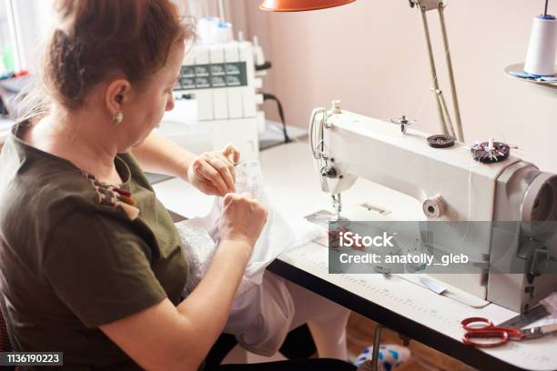
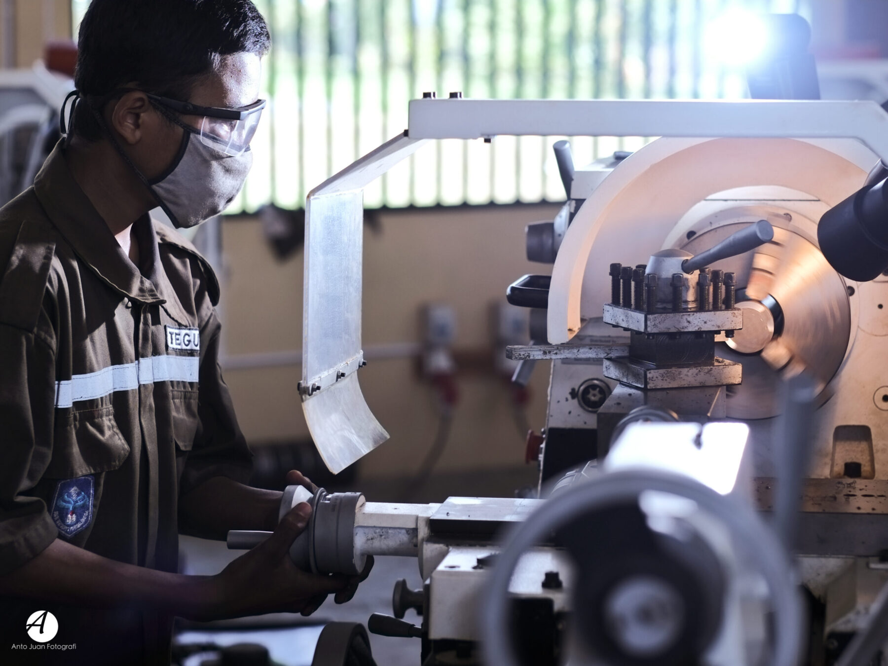

Jurusan ini mempelajari cara membuat perangkat lunak, mulai dari website dan aplikasi sampai gim. Siswa
berlatih menulis kode dengan HTML, CSS, dan bahasa pemrograman lain lewat proyek
nyata. Lulusan dapat bekerja sebagai web developer, programmer, atau pembuat gim.
Tata Boga – memasak
Jurusan yang mempelajari cara mengolah, memasak, menyajikan, dan mengembangkan berbagai jenis makanan serta
minuman. Siswa juga belajar tentang kebersihan makanan dan pelayanan kuliner.

Tata Busana – Menjahit
Jurusan yang mempelajari cara membuat pakaian, mulai dari menggambar desain, membuat pola, memotong kain,
menjahit, hingga menghasilkan busana yang siap digunakan.
DKV – Desain Komunikasi Visual
Jurusan ini mempelajari cara menyampaikan pesan lewat visual. Siswa berlatih desain grafis, fotografi, dan
produksi video kreatif. Lulusan dapat bekerja sebagai desainer grafis, fotografer, atau editor video.
TO – Teknik Otomotif
Jurusan yang mempelajari mesin kendaraan, sistem kelistrikan kendaraan, sistem pengereman, dan perawatan
serta perbaikan mobil atau sepeda motor.
TKL – Teknik Ketenagaan listrik
Jurusan yang mempelajari instalasi, perawatan, dan perbaikan sistem kelistrikan. Siswa belajar memasang
kabel, panel listrik, serta memahami rangkaian dan keselamatan kerja listrik.

TPM – Teknik permesinan
Jurusan yang mempelajari cara mengoperasikan mesin untuk membuat berbagai komponen atau benda teknik. Siswa
belajar menggunakan mesin bubut, frais, dan alat perkakas lainnya.